If you are seeing this then CSS is not whitelisted
Table of Contents
time_period
| Delta | P-value | varPCg1 |
| 0.824447005030577 | 0.512 | 20.6295699072817 |
gDist
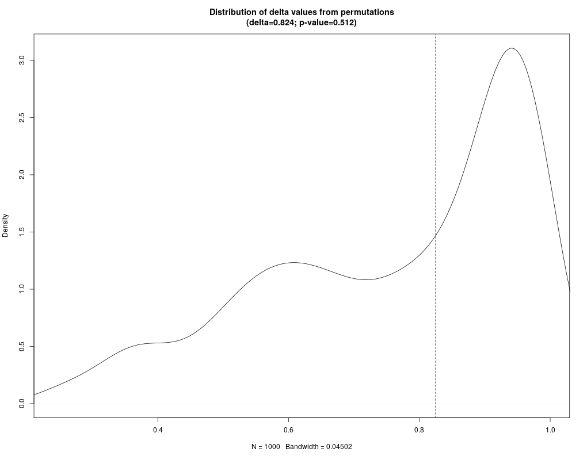
Guided 1v2
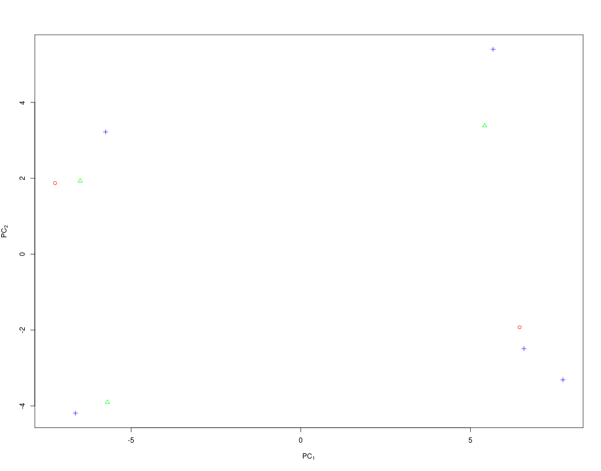
Unguided 1v2

Guided Compare to 3
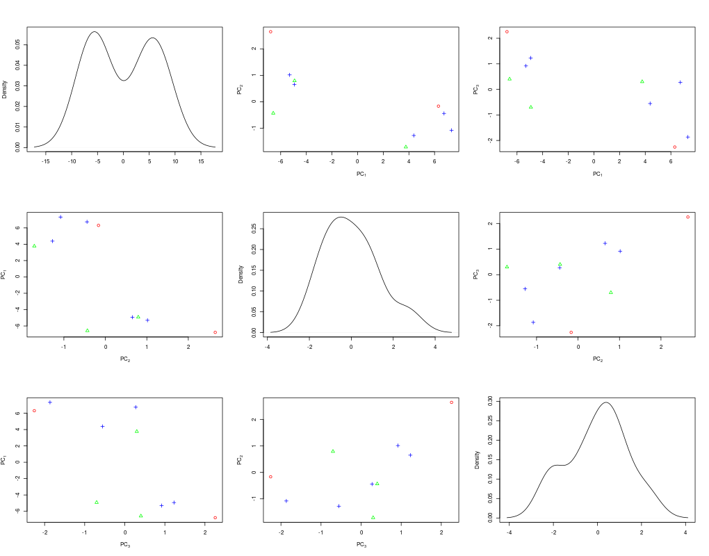
Unguided Compare to 3
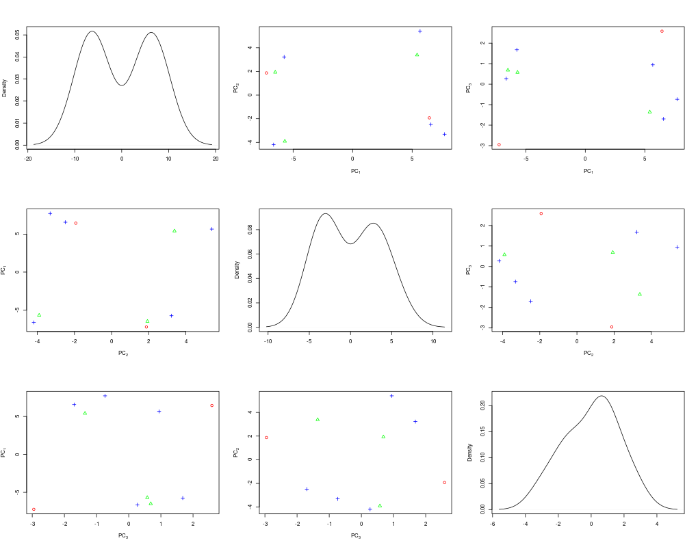
Guided Cumulative Variance
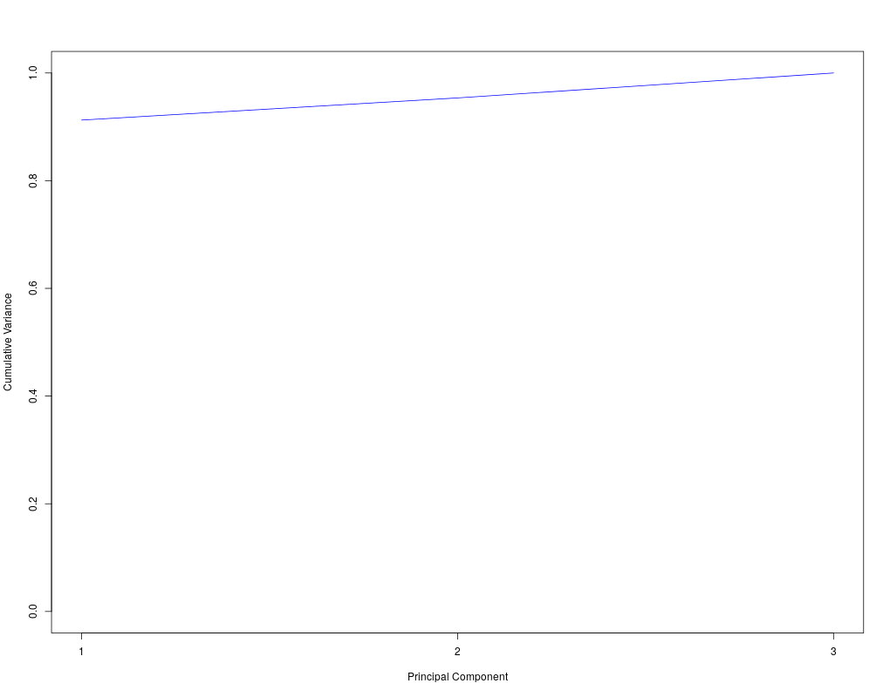
Unguided Cumulative Variance

random_batch
| Delta | P-value | varPCg1 |
| 0.97789000173787 | 0.086 | 19.260564791629 |
gDist
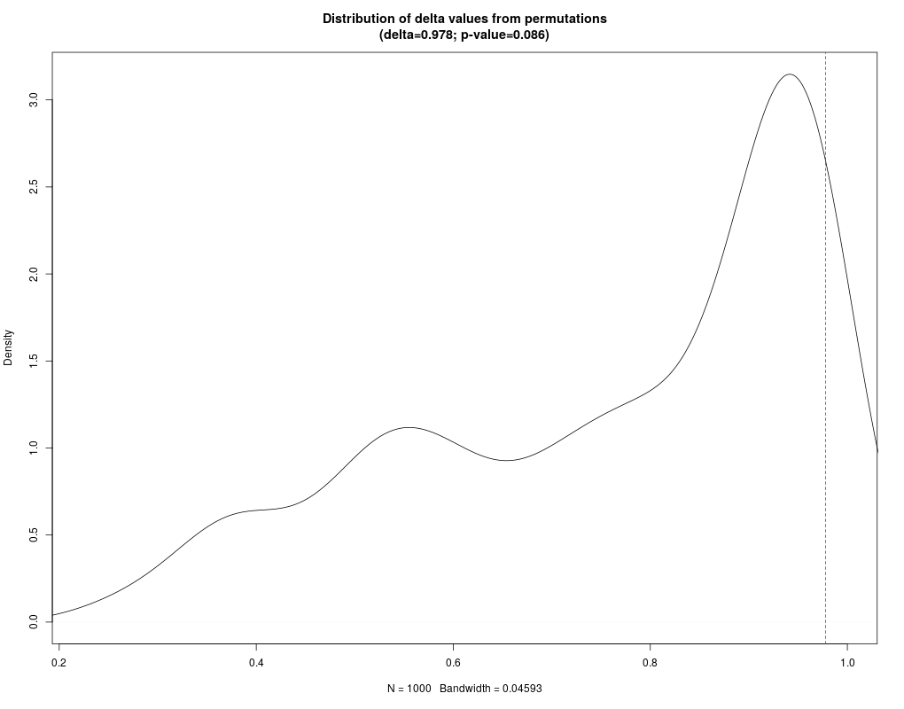
Guided 1v2
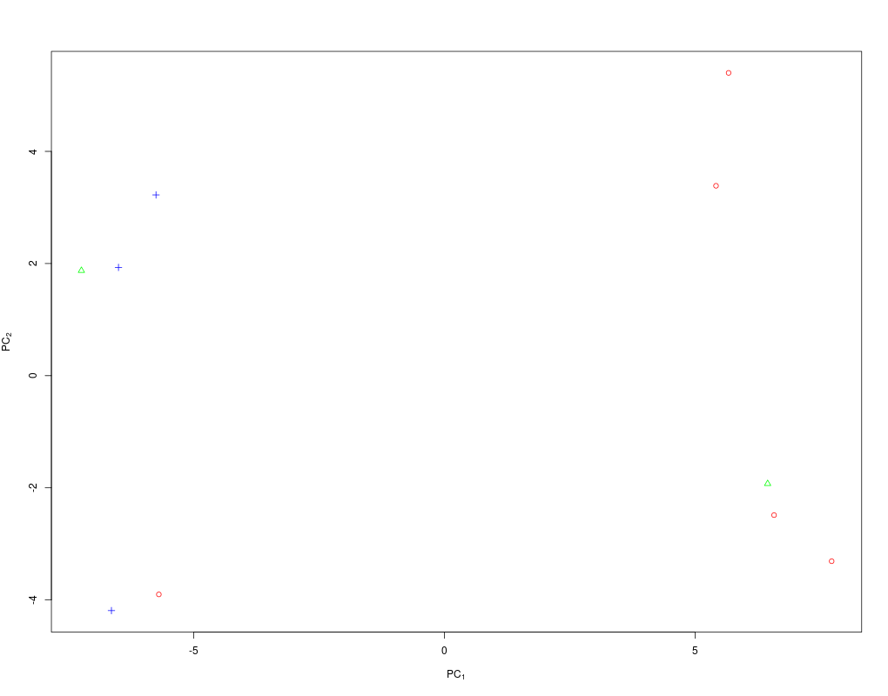
Unguided 1v2
Guided Compare to 3
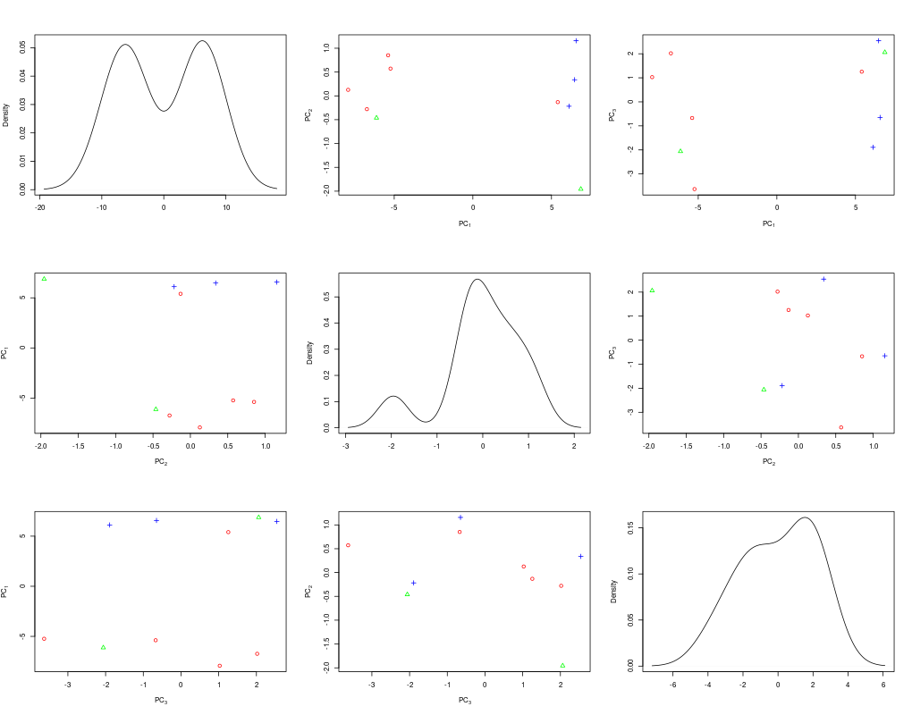
Unguided Compare to 3
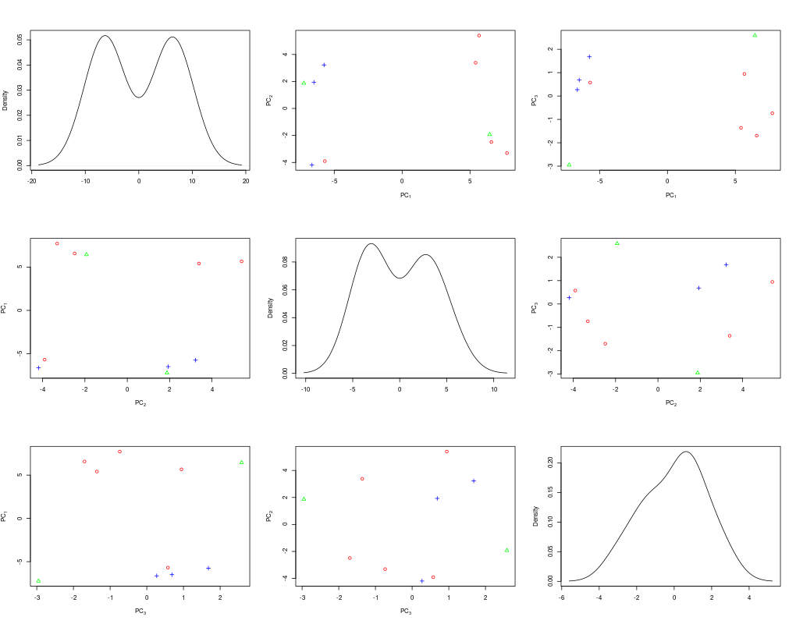
Guided Cumulative Variance
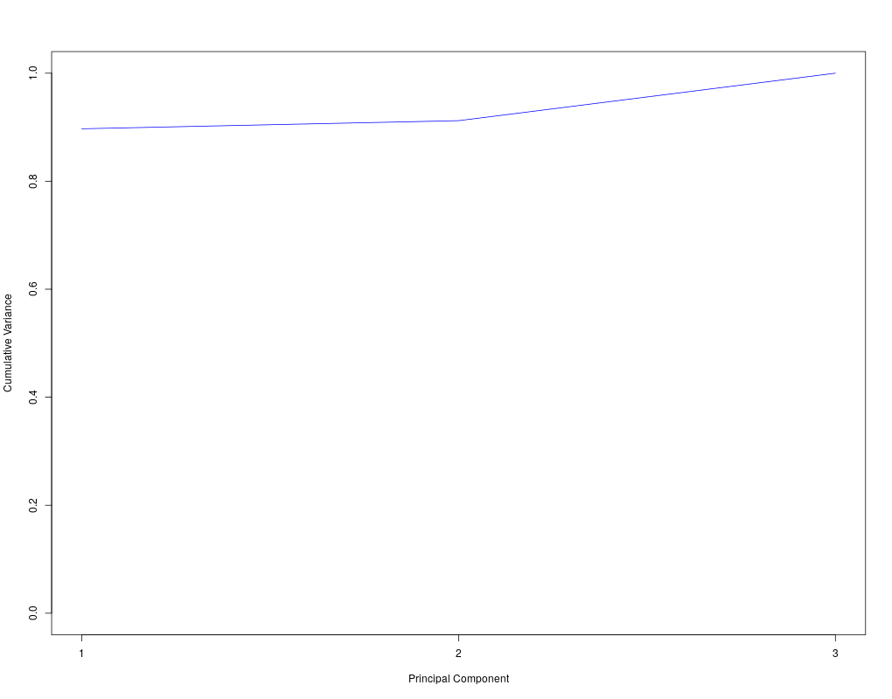
Unguided Cumulative Variance
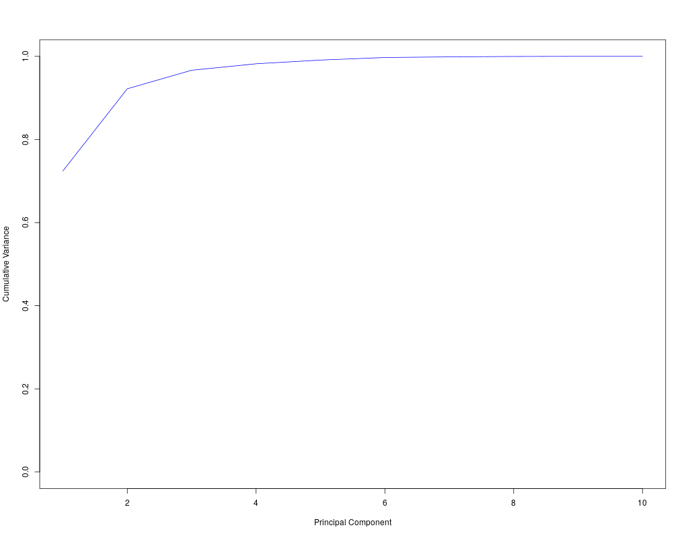
Back to Top